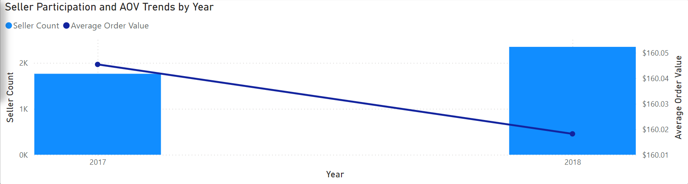
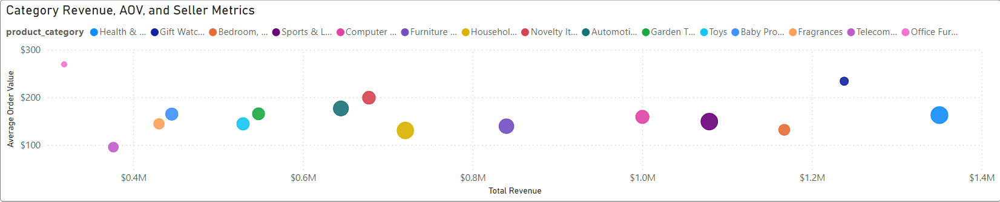
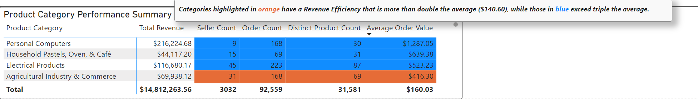

Dashboard 2: Seller Performance Analysis: Trends in AOV and Seller Counts
Purpose
This dashboard provides a detailed analysis of seller performance, focusing on trends,
average order value (AOV), and revenue growth to uncover actionable insights for
seller and category optimization.
Key Insights
-
Average order value (AOV) decreased slightly between 2017 and 2018 by $0.03,
while seller count increased from 1,763 to 2,349. Revenue grew from
$6,708,142.77 to $8,104,120.79, marking a 25% increase in sellers
and 17.22% growth in revenue.
-
Gift Watches and Office Furniture stand out with high AOVs compared to other
top categories. Office Furniture has the highest AOV ($269.11) among all categories
and the lowest seller count (33), indicating growth potential.
Dashboard Features and Sections
Filters and Selections
-
Time Slicer: Allows users to filter the data by year, quarter, and month.
Users can exclude 2016 for a more focused analysis of full-year trends.
-
Category Slicer: Enables filtering by specific product categories.
Screenshots
Visualizations
1. Seller Participation and AOV Trends by Year
Purpose: This visualization highlights trends in seller participation and changes in Average Order Value (AOV) across years.
Key Insight: Seller counts increased significantly between 2017 and 2018, while AOV decreased slightly by $0.03. The year 2016 includes only four months of data, which impacts the seller count.
Features:
- Dynamic filtering by year allows users to exclude 2016 for a clearer analysis of full-year trends.
- Bar chart for seller count and line chart for AOV trends.
Screenshots

Seller Participation and AOV Trends
2. Category Revenue, Efficiency, and Seller Metrics
Purpose: This scatter chart provides a comparative view of total revenue, AOV, and seller count for the top 15 categories by revenue.
Key Insight: Categories with higher AOV and fewer sellers, such as Office Furniture, indicate potential areas for growth.
Features:
- Bubble size represents seller count, allowing for quick identification of categories with low seller participation.
- Dynamic filtering by category and time enhances user insights.
Screenshots

Category Revenue, AOV, and Seller Metrics
3. Product Category Performance Summary
Purpose: This table summarizes key metrics like total revenue, seller count, and AOV for each product category.
Key Insight: Categories like Office Furniture and Gift Watches have high AOV but low seller counts, indicating opportunities for market expansion.
Features:
- Sorted by AOV to highlight high-performing categories.
- Highlights in orange and blue indicate categories exceeding average and triple the average AOV, respectively.
Screenshots

Product Category Performance Summary
Insights in Action
These insights can drive actionable strategies for seller and category optimization:
-
Prioritize marketing and support efforts for high-potential categories like Office Furniture.
-
Encourage seller participation in categories with high AOV but low seller counts to
unlock growth opportunities.
-
Use time and category filters to identify seasonal trends and performance shifts over time.
Measures Used
This section provides an overview of the key measures used in this dashboard. For a look at all measures used across my analysis, refer to the DAX Measures Document. Otherwise, use the links below to navigate to the respective measure.